Our Story
About Middle Ground
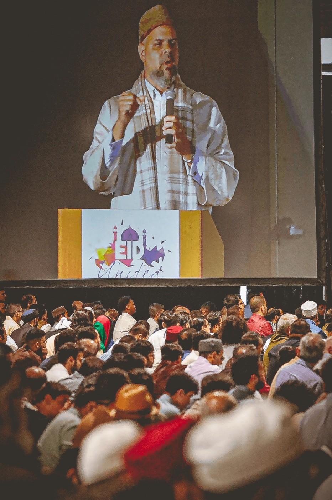
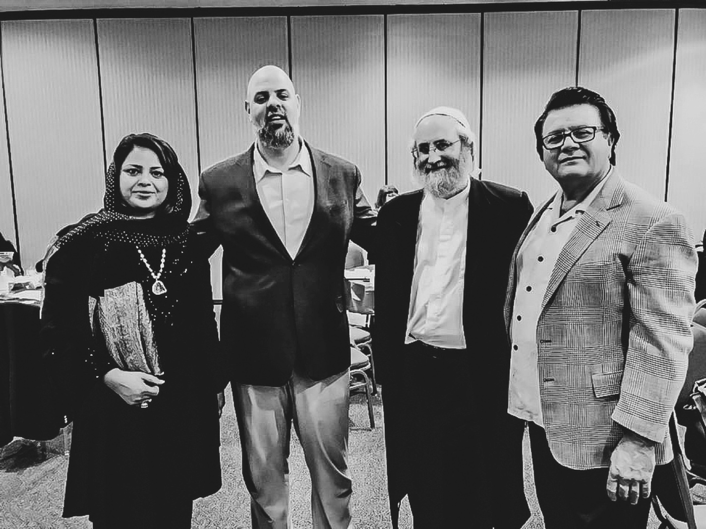
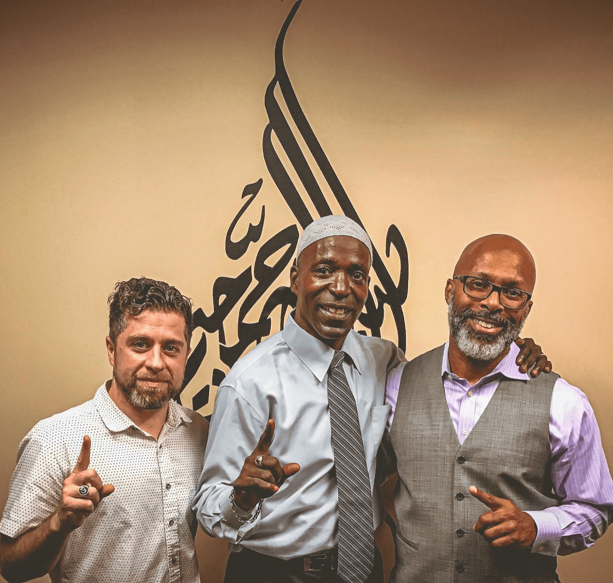
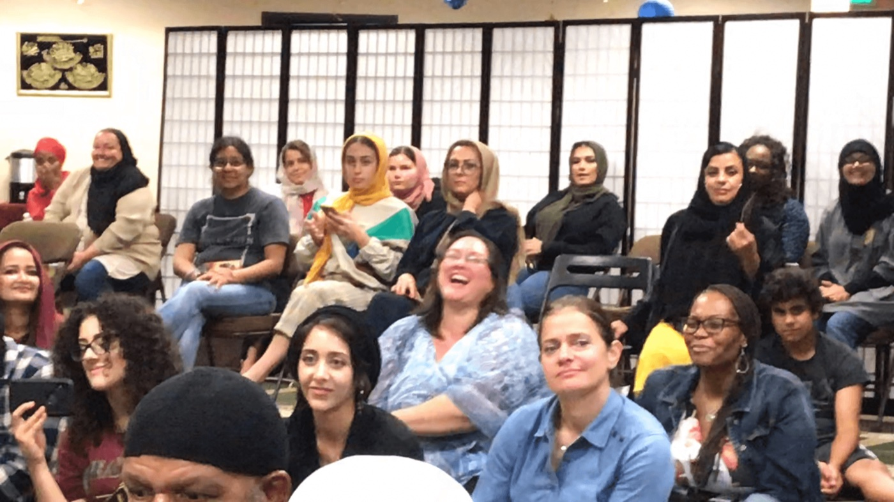
Middle Ground started as an idea; an ideal.
Back in 2014 we looked around the broader Inland Empire community and wanted to see if there was a way we could create a space that complemented the existing Muslim community and not create another siloed masjid. We envision that Middle Ground could fill a gap that was missing to make the greater Muslim community in the IE better. What we saw was an opportunity to provide quality and consistent Islamic education and a place that would cultivate a stronger connection between Muslims without being disruptive to traditional prayer spaces. And so in 2015, Middle Ground was born.
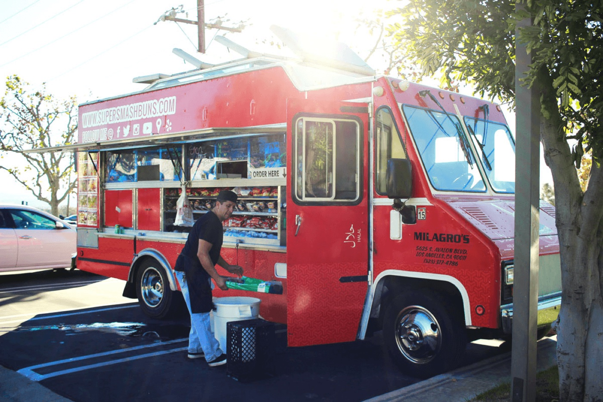
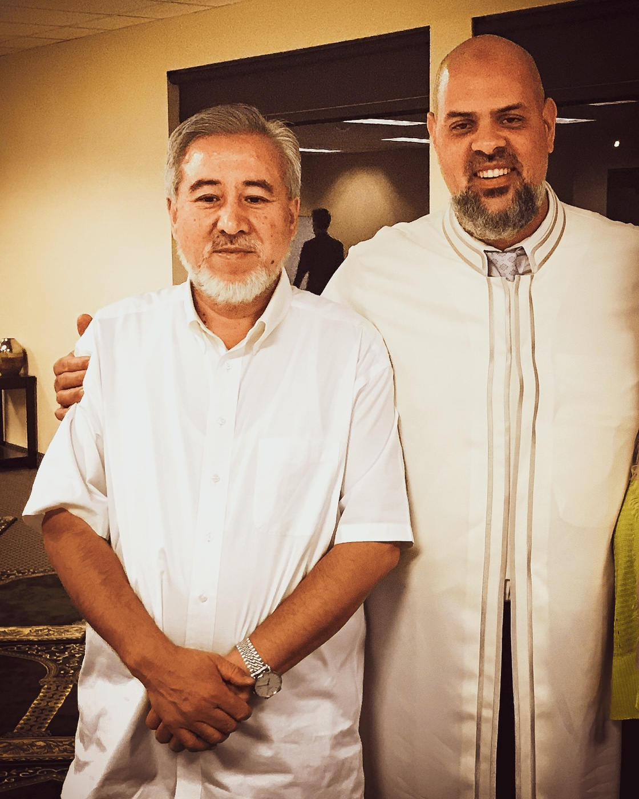
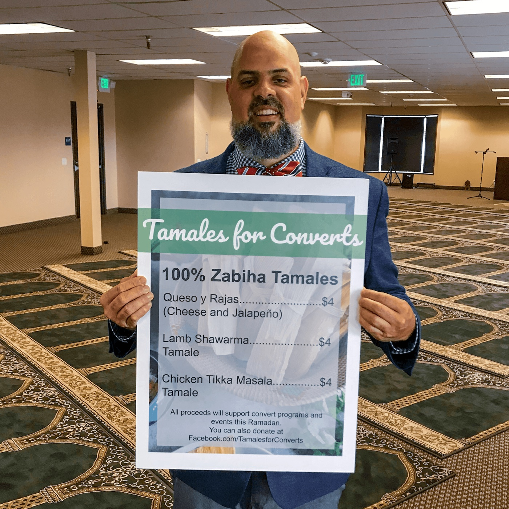
In the intervening decade or so we’ve hosted artists, scholars, activists and more. Heck, we even had a food truck. Despite being a small space we’re proud to host a daily ifṭār everyday during the month of Ramaḍān, something we see as vital for maintaining communal bonds of love and friendship.
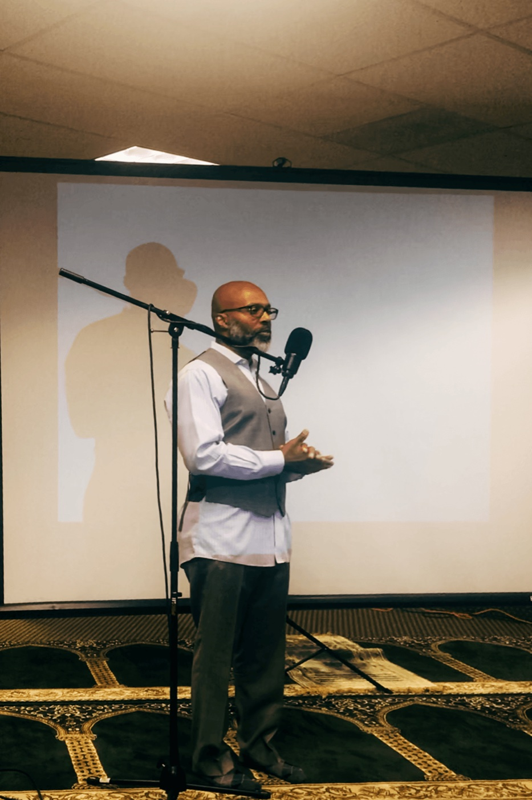
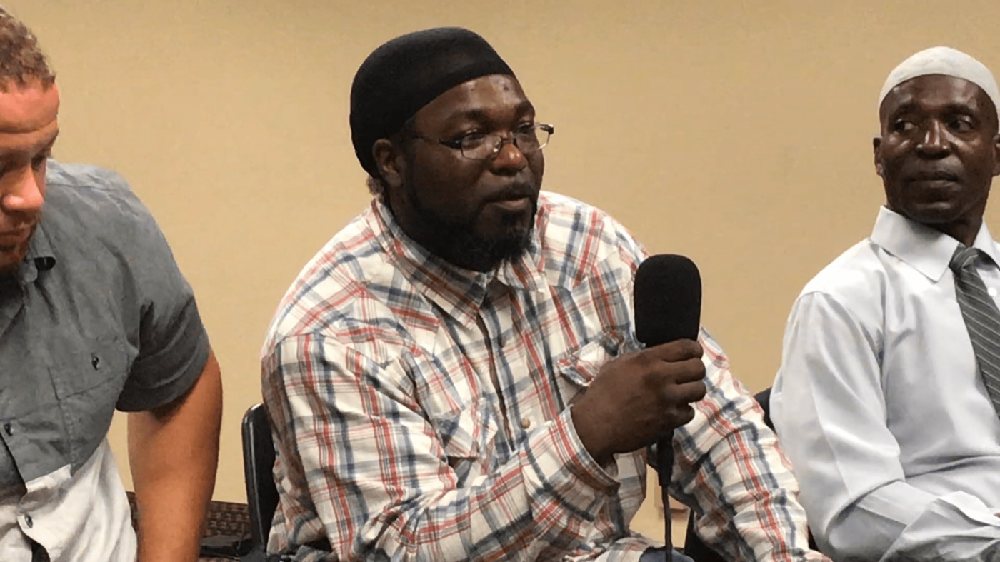
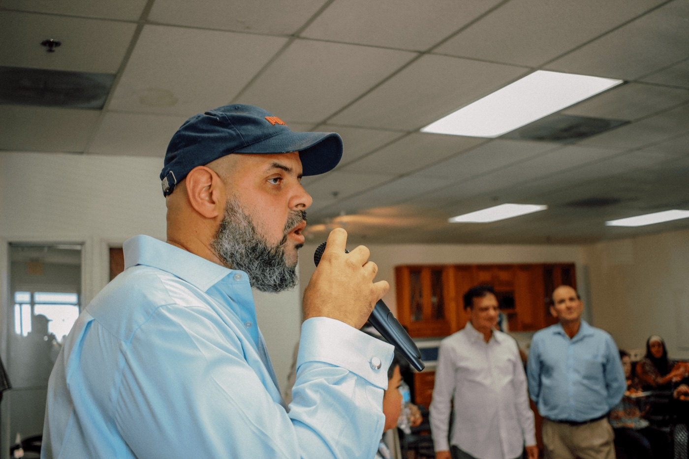
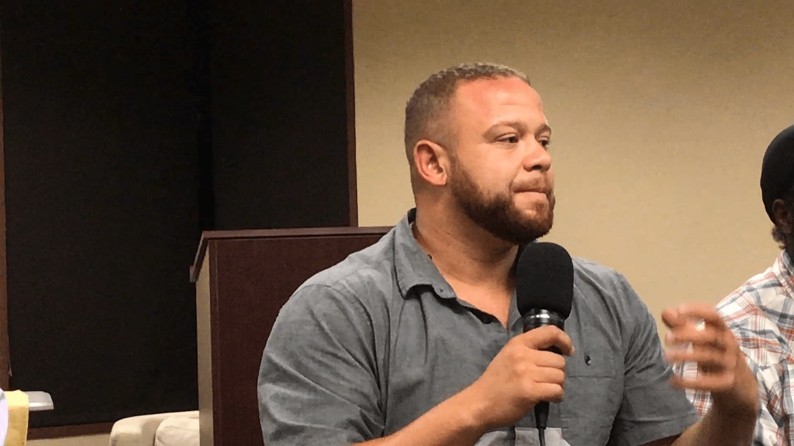
But as great and blessed as these many years have been, we aren’t resting on our laurels. As another friend of mine who’s also an imām has said: you’re only as good as your last khuṭah! So that’s where you come in. You are Middle Ground. We are Middle Ground. We certainly hope you’ll join us in continuing to build one of the most unique and rewarding Muslim communities in America.
We ask Allāh subḥāna wa taʿāla (God Almighty) to continue to bless these efforts, to reward all who’ve contributed, and we look forward to sharing a cup of coffee with you after Jumuʿah.
— Imām Marc Manley